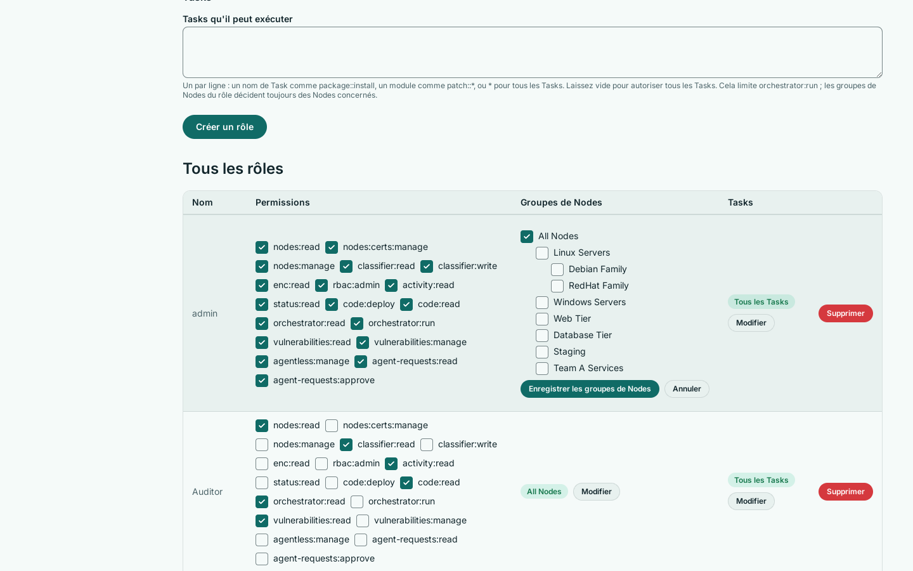

Utiliser
Utilisateurs, rôles et jetons
Donnez accès aux personnes par des rôles et des permissions, connectez-vous avec votre fournisseur d'identité, et émettez des jetons pour les programmes.
Tout, dans la console, est soumis à une permission, et chaque permission parvient à une personne par un rôle. Les programmes, comme enc-bridge, utilisent à la place des jetons de service.
La gestion des utilisateurs, des rôles et des jetons nécessite rbac:admin.
Les permissions
| Permission | Autorise |
|---|---|
nodes:read |
voir les Nodes, leurs Facts, Reports, paquets, mises à jour en attente et états de certificat |
nodes:manage |
supprimer des Nodes, et régler la fréquence à laquelle la console recherche les mises à jour en attente |
nodes:certs:manage |
signer, révoquer et nettoyer des certificats - équivaut à l'administration de la CA |
classifier:read |
voir les groupes de Nodes |
classifier:write |
créer, modifier et supprimer des groupes de Nodes |
enc:read |
lire la classification, comme le fait openvoxserver |
code:read |
voir les dépôts et les déploiements |
code:deploy |
lancer des déploiements |
orchestrator:read |
voir les Jobs |
orchestrator:run |
lancer des Jobs (exécutions Puppet, Tasks, Plans et exécutions de correctifs), activer ou désactiver la remontée des paquets d'un Node, et analyser les Nodes à la recherche de mises à jour en attente |
vulnerabilities:read |
voir les vulnérabilités constatées |
vulnerabilities:manage |
configurer les fournisseurs de vulnérabilités |
agentless:manage |
ajouter, modifier et supprimer des cibles SSH sans agent et des identifiants partagés, et accepter leurs clés d'hôte |
activity:read |
voir le journal d'activité |
status:read |
voir la page Système |
agent-requests:read |
voir ce dont les agents d'IA ont demandé l'exécution |
agent-requests:approve |
approuver et rejeter ces demandes |
rbac:admin |
gérer les utilisateurs, les rôles, les jetons de service et les jetons d'agent |
L'administrateur initial reçoit toutes les permissions. Une permission ajoutée dans une version plus récente de la console n'est jamais ajoutée pour vous aux rôles existants ; après une mise à jour, accordez donc les nouvelles sur la page Rôles aux rôles qui doivent en disposer.
Donner accès à quelqu'un
- Ouvrez Administration, puis Rôles, et créez un rôle doté des permissions dont la fonction a besoin - par exemple
nodes:read,classifier:readetorchestrator:readpour quelqu'un qui observe sans rien modifier. - Ouvrez Utilisateurs, créez l'utilisateur et attribuez-lui le rôle.
Les permissions d'un utilisateur sont la combinaison de tous ses rôles. Pour donner les mêmes rôles à toute une équipe, utilisez un groupe d'utilisateurs.
Mots de passe et verrouillage
Ces règles concernent les comptes qui se connectent avec un nom d'utilisateur et un mot de passe. Elles ne concernent ni les personnes qui se connectent via votre fournisseur d'identité, ni les jetons de service. Un administrateur (rbac:admin) les définit sous Administration, puis Politique des comptes. Un changement s'applique immédiatement, sur toutes les instances de la console.
Règles de mot de passe
| Règle | Par défaut | Peut aller de |
|---|---|---|
| Longueur minimale | 12 caractères | 8 à 72 |
| Doit contenir une minuscule, une majuscule, un chiffre, un symbole | aucune exigée | chacune activable ou non |
Deux règles ne peuvent pas être désactivées : un mot de passe ne peut pas être le nom d'utilisateur du compte, ni dépasser 72 octets.
Un mot de passe est vérifié au moment où il est défini : quand un administrateur crée un utilisateur ou définit son mot de passe, et quand une personne change le sien sous Préférences. Chacun de ces formulaires liste les règles, et signale celles qu'un mot de passe refusé n'a pas respectées.
Les mots de passe existants ne sont pas revérifiés. Après un durcissement des règles, tout le monde peut encore se connecter ; les nouvelles règles s'appliquent au prochain changement de chaque mot de passe.
Verrouillage
Après 10 échecs de connexion par mot de passe consécutifs, un compte est verrouillé pendant 15 minutes. Les deux valeurs sont modifiables (de 3 à 100 connexions ; de 1 à 1 440 minutes), et le verrouillage peut être désactivé.
- Tant qu'un compte est verrouillé, son mot de passe est refusé même s'il est correct. Les échecs de connexion pendant le verrouillage ne le prolongent pas.
- Le verrouillage prend fin de lui-même. Une connexion réussie remet le compteur à zéro.
- Les échecs de connexion sont comptés ensemble sur toutes les instances de la console.
- La page de connexion n'indique pas qu'un compte est verrouillé. Elle donne la même réponse que pour un mauvais mot de passe, car dire « verrouillé » révélerait à un attaquant quels noms d'utilisateur existent. Le message affiché à chaque échec de connexion mentionne que les comptes sont verrouillés après des tentatives répétées.
Le verrouillage vise la devinette de mots de passe ; il ne bloque donc que la connexion par mot de passe :
- Les sessions déjà ouvertes se poursuivent.
- La connexion via votre fournisseur d'identité fonctionne toujours.
- Les jetons de service ne sont pas concernés.
- Changer votre propre mot de passe demande le mot de passe actuel. Un mot de passe actuel erroné compte comme un échec de connexion, et le changement est refusé tant que le compte est verrouillé.
Déverrouiller un compte
Ouvrez Administration, puis Utilisateurs. Un compte verrouillé affiche Verrouillé jusqu'à suivi de l'heure. Choisissez Déverrouiller, ou Définir le mot de passe pour donner un nouveau mot de passe à l'utilisateur, ce qui déverrouille aussi le compte.
Si le seul administrateur est verrouillé et que personne d'autre ne peut déverrouiller le compte, attendez la fin du verrouillage. Pour empêcher quelqu'un de maintenir un compte verrouillé en échouant volontairement à se connecter, placez la console derrière un dispositif qui limite les requêtes vers /api/v1/auth/login, ou désactivez le verrouillage et reposez-vous plutôt sur ce dispositif.
Les verrouillages, déverrouillages, mots de passe refusés et modifications de la politique sont inscrits au journal d'audit ; les verrouillages, déverrouillages et modifications de la politique apparaissent aussi sur la page Activité.
Attribuer des rôles à un groupe
Un groupe d'utilisateurs est un ensemble nommé d'utilisateurs. Les rôles accordés à un groupe sont détenus par chacun de ses membres, en plus de leurs propres rôles : quand une équipe change, vous modifiez le groupe au lieu de chaque compte.
- Ouvrez Administration, puis Groupes d'utilisateurs, donnez un nom au groupe et choisissez Créer le groupe.
- Choisissez Modifier sous Membres et cochez les utilisateurs qui en font partie.
- Cochez les rôles que le groupe doit donner, dans la colonne Rôles.
Une personne qui appartient à plusieurs groupes, ou qui détient un rôle à la fois directement et via un groupe, ne le détient qu'une fois. Retirer le rôle à la personne laisse l'attribution du groupe, et la retirer du groupe laisse ce qu'elle détient elle-même.
La page Utilisateurs affiche les groupes de chaque personne et les rôles qu'elle détient à travers eux, par exemple « Patcher via Web ops ». Ceux-ci ne peuvent pas y être décochés : modifiez le groupe. La page Rôles affiche les groupes auxquels chaque rôle est accordé.
Groupes et limites
Un groupe ajoute des rôles ; il ne les fusionne pas. Chaque rôle s'applique toujours sur ses propres groupes de Nodes et, s'il en a une, sa propre liste de Tasks, comme pour les rôles attribués directement à une personne. Une personne membre d'un groupe qui accorde un rôle limité à patch::* sur les serveurs web, et à qui est aussi attribué un rôle autorisant tous les Tasks sur les serveurs de bases de données, peut exécuter les Tasks de correctifs sur les serveurs web et n'importe quoi sur les serveurs de bases de données.
Suppression et retrait
- Supprimer un groupe retire ses rôles à ses membres. S'il a des membres, la console indique combien de personnes sont concernées avant de le supprimer.
- Supprimer un utilisateur le retire de ses groupes, et supprimer un rôle le retire des groupes qui le détiennent.
- La console refuse de supprimer un groupe, de lui retirer un rôle ou d'en retirer un membre si cela devait ne laisser personne avec
rbac:admin.
Quand un changement prend effet
Rejoindre ou quitter un groupe, et accorder ou révoquer les rôles d'un groupe, prennent effet au prochain rafraîchissement de la session de la personne, dans les 15 minutes, comme tout changement de rôle. Un Job planifié est vérifié au regard des groupes de son propriétaire à chaque déclenchement.
Chaque modification d'un groupe, de ses membres et de ses rôles est inscrite au journal d'audit sous la catégorie rbac.
Limiter un rôle à certains de vos Nodes
Les permissions d'un rôle s'appliquent à des groupes de Nodes. Un nouveau rôle est accordé sur All Nodes, c'est-à-dire tout le parc. Pour limiter une équipe à ses propres serveurs, accordez plutôt le rôle sur le groupe de cette équipe :
- Assurez-vous qu'un groupe de Nodes contient exactement les Nodes que l'équipe doit voir - voir Classifier les Nodes.
- Ouvrez Administration, puis Rôles.
- Dans la colonne Groupes de Nodes du rôle, choisissez Modifier, décochez All Nodes et cochez le groupe de l'équipe.
- Choisissez Enregistrer les groupes de Nodes.


Un droit accordé sur un groupe couvre tous les groupes situés en dessous ; un rôle sur Linux Servers voit donc aussi les Nodes de Debian Family. Les membres du rôle reçoivent le changement au prochain rafraîchissement de leur session, dans les 15 minutes ; un Node qui entre dans le groupe ou en sort apparaît ou disparaît en moins d'une minute.
Une personne ainsi limitée ne voit que ses Nodes partout où apparaissent des données de Nodes : la liste des Nodes et, pour chacun, ses Facts, Reports, paquets et vulnérabilités, les chiffres du Dashboard, le catalogue des paquets, la liste des vulnérabilités, la page Jobs, et les nombres de Nodes des pages Groupes et Code. Un Node hors de ses groupes répond exactement comme un Node inexistant. La page Nodes indique quels groupes elle voit.
Les mêmes groupes limitent ce que la personne peut faire. Exécuter Puppet, un Task ou un Plan, activer ou désactiver la remontée des paquets d'un Node, mettre à jour son agent, le supprimer, et signer, révoquer ou nettoyer son certificat exigent tous que le Node fasse partie des groupes d'un rôle qui accorde cette permission. Une action qui nomme un Node hors de ces groupes est refusée, et la console indique de quels Nodes il s'agit. Lorsqu'une action nomme plusieurs Nodes et que l'un d'eux est hors des groupes, rien n'est fait sur aucun d'eux.
Les Nodes d'un Job peuvent aussi être choisis par une requête ou un groupe de Nodes plutôt que par leur nom - voir Lancer des Jobs. Ces choix sont restreints plutôt que refusés : une personne limitée à certains groupes de Nodes obtient les Nodes correspondants qui font partie de ses groupes, et n'apprend rien sur les autres. Ses requêtes ne peuvent pas contenir de sous-requête, qui pourrait sinon servir à se renseigner sur des Nodes hors de ses groupes.
Un Job planifié s'exécute en tant que son propriétaire, avec les rôles de celui-ci tels qu'ils sont à chaque déclenchement. Retirer le rôle d'une personne empêche ses planifications de lancer quoi que ce soit ; le restreindre restreint ce sur quoi elles s'exécutent. Chacun voit et modifie ses propres planifications, et seul un rôle accordé sur All Nodes voit et modifie celles de tout le monde.
Voir plus que ce que l'on peut modifier
Chaque permission est limitée par les rôles qui l'accordent : voir et agir peuvent donc différer. Pour qu'une équipe voie tout le parc mais n'exécute Puppet que sur ses propres serveurs, donnez à ses membres deux rôles :
| Rôle | Permissions | Groupes de Nodes |
|---|---|---|
| Lecteurs du parc | nodes:read, classifier:read, orchestrator:read |
All Nodes |
| Opérateurs web | orchestrator:run |
Web Servers |
Ils voient chaque Node et chaque Job, et une exécution sur un serveur de bases de données leur est refusée.
Ce que les groupes de Nodes ne limitent pas
- La page Activité. C'est le journal d'audit, et elle nomme chaque Node. N'accordez
activity:readqu'aux personnes autorisées à connaître l'ensemble du parc. - Les définitions des groupes de Nodes. Toute personne dotée de
classifier:readvoit tous les groupes, y compris les noms des Nodes qui y sont épinglés, etclassifier:writepermet de modifier n'importe quel groupe. - Les jetons de service, qui couvrent toujours tout le parc. Ils peuvent être limités à certains Tasks, comme un rôle - voir Émettre un jeton pour un programme.
- Les Plans enregistrés. Toute personne dotée de
orchestrator:readvoit tous les Plans, et toute personne dotée deorchestrator:runpeut modifier n'importe lequel. L'exécution d'un Plan reste limitée à vos Nodes. - Les déploiements de code, qui ne concernent pas un Node.
À savoir
- Un Node qui n'a jamais exécuté Puppet n'a pas de Facts, et ne correspond donc à la règle d'aucun groupe. Il ne fait partie des groupes d'une équipe que s'il est épinglé à l'un d'eux. Cela inclut les Nodes dont le certificat attend d'être signé - voir Gérer les certificats des Nodes.
- Un rôle sans aucun groupe de Nodes affiche l'avertissement Aucun groupe de Nodes. Ses permissions ne s'appliquent à aucun Node.
- L'historique des Jobs suit les groupes actuels d'un Node. Lorsqu'un Node passe dans un autre groupe, ses Jobs passés quittent avec lui la vue de l'ancien groupe.
Limiter un rôle à certains Tasks
orchestrator:run seul permet d'exécuter tous les Tasks que connaît la console, sur les Nodes couverts par le rôle. Pour qu'une équipe puisse exécuter les Tasks de correctifs et rien d'autre, donnez à son rôle une liste de Tasks autorisés :
- Ouvrez Administration, puis Rôles.
- Dans la colonne Tasks du rôle, choisissez Modifier.
- Saisissez un motif par ligne, puis choisissez Enregistrer les Tasks. Le formulaire Nouveau rôle comporte le même champ.
Un motif prend l'une des formes suivantes :
| Motif | Autorise |
|---|---|
package::install |
ce Task uniquement |
patch::* |
tous les Tasks du module patch, ainsi que le Task propre au module, patch |
* |
tous les Tasks |
La correspondance est exacte et sensible à la casse : patch::* n'autorise donc pas patching::apply. Rien d'autre n'est accepté : un motif avec un joker placé ailleurs, une ligne vide ou une majuscule est refusé, et le formulaire conserve ce que vous avez tapé. Un rôle peut contenir jusqu'à 20 motifs de 64 caractères au plus.
Un rôle sans motif autorise tous les Tasks. C'est l'état dans lequel restent tous vos rôles existants : rien ne change tant que vous n'en ajoutez pas. La liste ne fait que restreindre orchestrator:run : elle n'accorde jamais rien, et ce sont toujours les groupes de Nodes du rôle qui décident des Nodes.
Comment se combinent les rôles d'une personne
La liste de chaque rôle s'applique sur les groupes de Nodes propres à ce rôle, et non sur tous ceux de la personne. Une personne dotée de ces deux rôles :
| Rôle | Groupes de Nodes | Tasks |
|---|---|---|
| Correcteurs web | Web Servers | patch::* |
| Opérateurs bases de données | Database Servers | (tous les Tasks) |
peut exécuter patch::apply sur un serveur web et n'importe quel Task sur un serveur de bases de données, et un Task tel que package::install lui est refusé sur un serveur web. Détenir le second rôle n'élargit pas le premier.
Lorsqu'un Task est lancé sur des Nodes choisis par une requête ou un groupe de Nodes, il s'exécute sur les Nodes correspondants où la personne a le droit de l'exécuter, sans rien dire des autres, comme pour les groupes de Nodes. Un Plan est restreint aux Nodes sur lesquels chacune de ses étapes de Task peut s'exécuter, si bien que toutes ses étapes s'exécutent toujours sur les mêmes Nodes. Une liste de Nodes nommés qui en inclut un sur lequel le Task n'est pas autorisé est refusée, en le nommant.
À quoi ressemble un refus
Lancer un Task que les rôles de la personne n'autorisent pas est refusé avec 403 et le nom du Task ; rien n'est lancé. Un Plan nomme aussi l'étape, sous la forme step 2 (package::install). Un Task inexistant et un Task que la personne n'a pas le droit d'exécuter sont refusés de la même façon, afin que la liste ne révèle pas quels Tasks existent. Chaque refus figure dans le journal d'audit sous task.denied, avec la personne, le Task et l'étape, et jamais les paramètres du Task.
Ce que la liste ne limite pas :
- Les exécutions Puppet, qui ne sont pas des Tasks.
- La consultation des Jobs et de leur historique. Elle limite ce qu'une personne peut lancer.
- Les personnes qui peuvent seulement lire. Quelqu'un qui a
orchestrator:readsansorchestrator:runvoit tous les Tasks dans la liste des Tasks.
La boîte de dialogue Exécuter le Task, l'éditeur de Plans et le formulaire de planification ne proposent que les Tasks que la personne peut exécuter.
Plans et planifications
- L'enregistrement d'un Plan ou d'une planification contenant un Task que la personne n'a pas le droit d'exécuter est refusé, en nommant l'étape et le Task.
- Un Plan enregistré par quelqu'un d'autre montre toutes ses étapes à une personne dont la liste est plus restreinte, en signalant celles qu'elle n'a pas le droit d'exécuter. Elle ne peut pas l'exécuter, ni y enregistrer de modifications sans retirer ces étapes.
- Une planification est vérifiée à chaque déclenchement, au regard des rôles de son propriétaire à ce moment-là. Si le propriétaire n'a plus le droit d'exécuter l'un de ses Tasks, rien ne démarre et le déclenchement est consigné comme ignoré, en nommant le Task (et l'étape, pour un Plan).
Quand un changement prend effet
La liste d'un rôle atteint les sessions d'une personne à leur prochain rafraîchissement, dans les 15 minutes, comme toute autre permission. Une planification la prend en compte à son prochain déclenchement.
Les listes de Tasks d'une personne voyagent dans son jeton d'accès. Les limites ci-dessus maintiennent un rôle à environ 1,3 Ko au maximum, et la plupart des personnes portent quelques motifs courts. Si vous donnez à quelqu'un de nombreux rôles restreints, vérifiez que le reverse proxy placé devant la console accepte des en-têtes de requête de cette taille ; certains n'autorisent que 8 Ko.
Se connecter avec votre fournisseur d'identité
La console peut aussi connecter les personnes via OpenID Connect. La connexion locale et les jetons de service continuent de fonctionner en parallèle. Enregistrez la console auprès de votre fournisseur, avec l'URL de redirection https://console.example.com/api/v1/auth/oidc/callback, et définissez :
| Paramètre | Ce que c'est |
|---|---|
CONSOLE_OIDC_ISSUER |
l'URL de l'émetteur de votre fournisseur |
CONSOLE_OIDC_CLIENT_ID, CONSOLE_OIDC_CLIENT_SECRET |
l'enregistrement de la console |
CONSOLE_OIDC_REDIRECT_URL |
l'URL de redirection ci-dessus |
CONSOLE_OIDC_SCOPES |
vaut par défaut openid profile email groups |
CONSOLE_OIDC_USERNAME_CLAIM |
le claim dont provient le nom d'un nouvel utilisateur ; vaut par défaut email |
CONSOLE_OIDC_ROLE_CLAIM |
le claim qui liste les groupes d'une personne ; vaut par défaut groups |
CONSOLE_OIDC_ROLE_MAPPING |
un objet JSON associant des valeurs de claim à des noms de rôle, comme {"platform-admins":"admin"} ; chaque rôle doit déjà exister, et les valeurs non mappées sont ignorées |
La page de connexion propose alors Se connecter avec SSO. À chaque connexion, la console attribue à la personne les rôles mappés que ses claims désignent actuellement, et retire les rôles mappés qu'ils ne désignent plus. Un rôle attribué à la main par un administrateur n'est jamais modifié.
Votre fournisseur doit placer les claims de nom d'utilisateur et de groupes dans l'ID token lui-même, et pas seulement derrière son endpoint user-info. Certains fournisseurs les omettent par défaut de l'ID token lorsqu'ils émettent aussi un jeton d'accès, et nécessitent un réglage pour les inclure.
Émettre un jeton pour un programme
Un jeton de service possède un ensemble fixe de permissions choisies à sa création, et n'expire jamais de lui-même. Donnez à chaque programme le sien, avec uniquement ce dont il a besoin :
- Ouvrez Administration, puis Jetons de service.
- Sous Nouveau jeton de service, nommez-le et choisissez ses permissions.
- Vous pouvez aussi, sous Tasks qu'il peut exécuter, lister les Tasks qu'il peut lancer, un motif par ligne, comme pour un rôle. Laissez vide pour autoriser tous les Tasks. La liste est figée à la création du jeton.
- Choisissez Créer un jeton de service, puis copiez le jeton : il n'est affiché qu'une fois.
Supprimer un jeton de service le révoque immédiatement sur toutes les instances de la console. La déconnexion révoque de la même façon les jetons de la session.
Pour donner accès à un agent d'IA, utilisez plutôt un jeton d'agent : il expire, il est limité à des groupes de Nodes, et chaque changement qu'il demande attend l'approbation de quelqu'un. Voir Laisser des agents d'IA utiliser la console.
Conserver un journal d'audit
Chaque modification faite via la console figure sur la page Activité, qui nécessite activity:read. Par ailleurs, la console peut écrire un journal d'audit destiné à un collecteur de journaux, avec un niveau par catégorie :
| Paramètre | Catégorie |
|---|---|
CONSOLE_AUDIT_NODES |
Nodes et certificats |
CONSOLE_AUDIT_CLASSIFIER |
groupes de Nodes |
CONSOLE_AUDIT_RBAC |
utilisateurs, groupes d'utilisateurs, rôles et jetons |
CONSOLE_AUDIT_AUTH |
connexions et déconnexions |
CONSOLE_AUDIT_CODE |
déploiements de code |
CONSOLE_AUDIT_ORCHESTRATOR |
les Jobs, et les Tasks refusés à une personne dont les rôles ne les autorisent pas |
CONSOLE_AUDIT_VULNERABILITIES |
fournisseurs de vulnérabilités |
Chacun vaut off, writes (par défaut : modifications et connexions) ou full (également chaque consultation). Les événements d'audit vont dans la sortie de journal de la console, sauf si CONSOLE_AUDIT_LOG_PATH désigne un fichier.